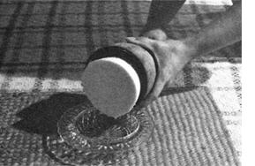

Everyone knows you can't get meaningful amounts of cream from goat's milk without a fancy separator . . . certainly not enough cream to yield butter. I "knew" this too, but being a butter lover from way back-and being the owner of two does that give a gallon of milk per day each-I (quite naturally) wanted to take a stab at whipping up some "goat butter". I didn't intend to give up without a fight.
The first thing I did to prepare myself for my "impossible" task was read up on buttermaking in general. Three books that I found especially helpful were: [1] Rodale's Stocking Up, [2] Irma S. Rombauer and Marion R. Becker's The Joy of Cooking, and [3] Making Homemade Cheeses and Butter by Phyllis Hobson. [EDITOR'S NOTE: Instructions for ordering these books appear at the end of this article.]
From the information contained in these guides-and through a fair amount of trial and error in the kitchen-I ultimately succeeded in developing a simple, dependable method for making butter from goat's milk, without the aid of a separator. Here's what you do:
Strain one gallon of fresh milk into a clean, shallow, large pan and allow the container to situncovered and undisturbed-in your refrigerator for 24 hours. The next day, take the pan from the fridge and-with a large spooncarefully skim off the cream that has risen to the top and store it in the refrigerator in a sterile, tightly covered jar. (The skim milk can be used in cooking, in cottage cheese, or as a tasty treat for your livestock.)
Note: So far, I've had no problem with "off flavors" in my milk or cream. As long as your utensils and refrigerator are reasonably clean, you shouldn't have any trouble either. Just don't store garlic or onions next to the milk.
Repeat the foregoing procedure on a daily basis until you've accumulated one pint of heavy cream in your jar. This should take about five days, if you skim a gallon of milk per day. (Naturally, if you use two gallons of milk and two large pans, you can cut this time in half.) When you've collected a pint of cream, you'll be ready to make butter.
First, put a two-quart mixing bowl, a pair of beaters, and two cups of water in the refrigerator to chill for half an hour. Then set up the mixing bowl and mixer someplace that will take some splattering. (I usually spread newspapers over my work area.)
OK. Take the pint of cream out of the fridge, stir it up with a plastic or rubber spatula, and drop in a dairy thermometer. When the cream has warmed to 52°F, pour it into the cold mixing bowl and whip it at high speed.
Whip the cream until it's stiff . . . and keep right on beating. As you pass the "whipped cream" stage, the action of your mixer will become less labored and-within minutes-you'll begin to see butter forming as tiny "grains" surrounded by a milky fluid. (The liquid splatters like crazy, so be ready for it! ) Turn the mixer off as soon as the grains of butter begin to crowd and clump together in the buttermilk.
Next, pour the buttermilk off into a measuring cup (there'll be about one cup per pint of cream) and keep it to use in biscuits, pancakes, or corn bread. Then measure out as much cool water as you have buttermilk . . . and use the water to rinse the butter as you run your mixer on low speed. Rinse the butter two more times in the same way with cool water and then twice again in two cups (each time) of ice water from the refrigerator. ( Scrape the butter off the beaters with a spatula between rinses.)
After the last rinse, scrape the butter into a pile against the side of the mixing bowl andusing a wooden spoon-work out the water by repeatedly folding the creamy mass over on itself. ( Pour off excess water as you go.) This process takes from 10 to 15 minutes. Don't be surprised if your hand gets tired!
Once you've worked all the excess moisture from the butter, you may want to press it into a pad or cake. If you have a wooden butter mold, be sure to rinse it in cool water before you begin so the spread won't stick to the form's inside. (If the mold hasn't seen any action for some time, it'll have to be "seasoned" by regular use before it can be expected to give dependable results.)
Let the packed mold sit in the refrigerator for about 15 minutes before turning the butter out onto a plate. When you've finished, you'll have a half-pound cake of butter (assuming you started with one pint of cream) that's milkwhite in color and deliciously mild in taste. I don't add any salt to mine, but-if you like-you can work some into your spread just before it's molded.
There you have it: My sure-fire recipe for homemade goat butter sans separator. It may seem like a lot of trouble for just a half-pound of butter . . . but, actually, the process goes quite quickly with practice. (Even if it didn't, the end result would still be worth it to me.)
So, while you're saving your pennies for that fancy cream separator . . . why not just go ahead, get out your mixer, and make up some no-fuss goat butter?
|
 MICHAEL E. BLILEY |
|
|